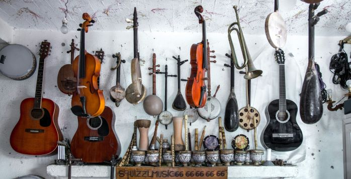

Présentation
La musique, définie comme un art de combiner et de juxtaposer les sons d'une manière agréable à l'oreille, procure des sensations et a un pouvoir bien plus grand que ce que l'opinion publique pourrait en penser.
La musique, cohésion parfaite entre les différents sons que ces derniers soient verbaux, instrumentaux, déjà considérée dans les temps anciens comme une ouverture (entrée en scène) des cérémonies et des cultes, possède un pouvoir thérapeutique que même la science ne pourrait égaler.

source:unsplash.com
Découvrons ensemble les bienfaits de cette arme invisible mais redoutable pratiquée depuis la nuit des temps qu'est la Musique